돌워리 0.9.1 · 2026-10-16 기준 · 위 화면은 예시 데이터를 넣은 실제 앱이에요
왜 돌인가요
워리스톤은 엄지가 들어갈 홈이 파인 납작한 돌이에요. 주머니에 넣어 두고 마음이 급할 때 꺼내 문질러요. 돌워리는 그 몇 분을 빌려요. 돌을 쥐고 있는 동안 뒤에서 정리가 돌고, 놓으면 치울 후보만 남아요.
몇 분 쥘지 고르고 돌을 켜요. 돌 위를 엄지로 문지르면 결이 쌓이고, 바깥을 끌면 돌이 돌아가요.
쥐고 있는 동안 켜 둔 돌이 맡은 것을 다시 봐요. 묵은 캡처, 오래 조용한 방, 같은 파일이 여러 군데.
끝나면 치울 후보가 목록으로 나와요. 남길지 치울지는 한 번 눌러 정하고, 지우는 건 직접 해요.
돌 14종
색은 그 서비스 색이에요. 카카오톡 노랑은 시트린, 파인더 파랑은 소달라이트. 이름은 워리스톤 판매명 방식 그대로예요. 효능은 없어요. 맡는 일만 있어요.
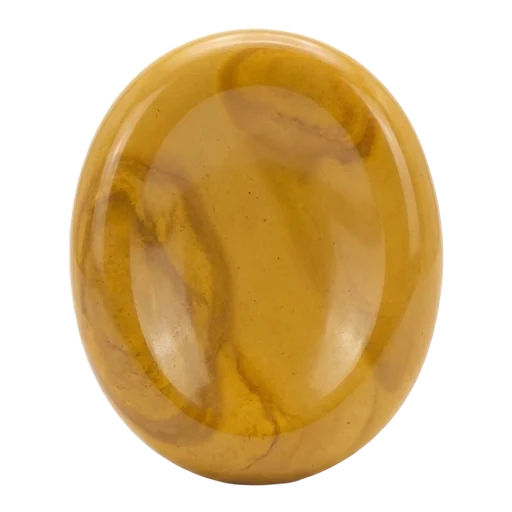
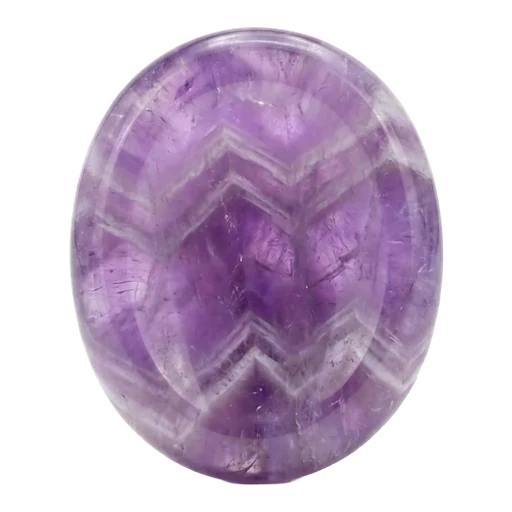
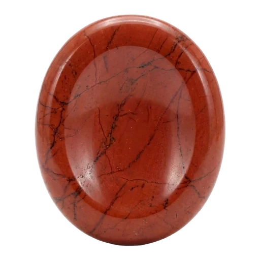
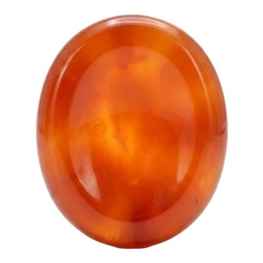
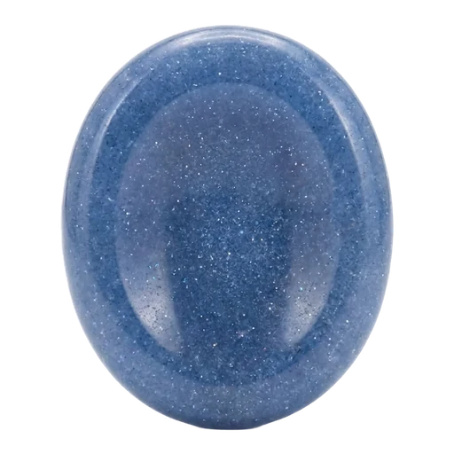
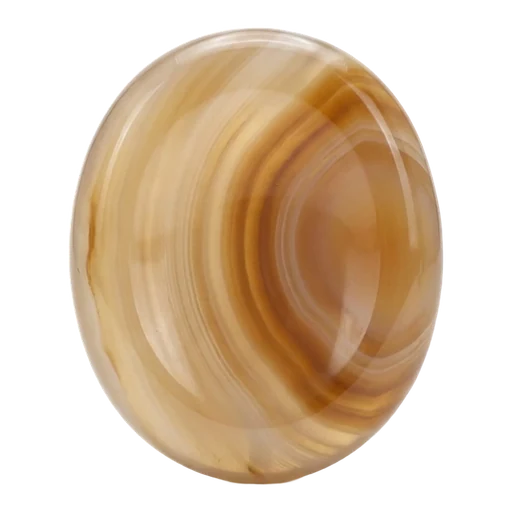
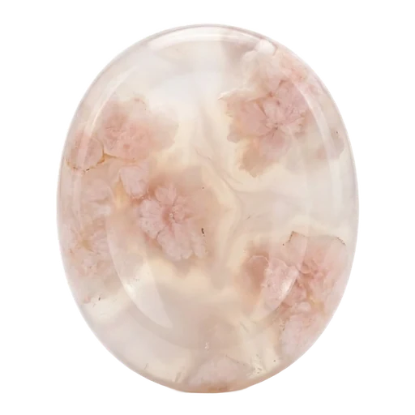
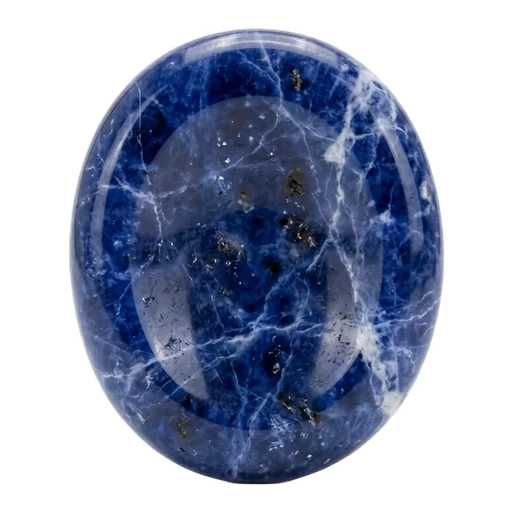
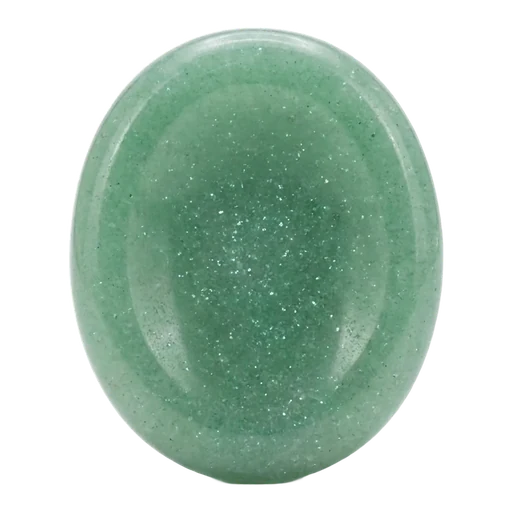
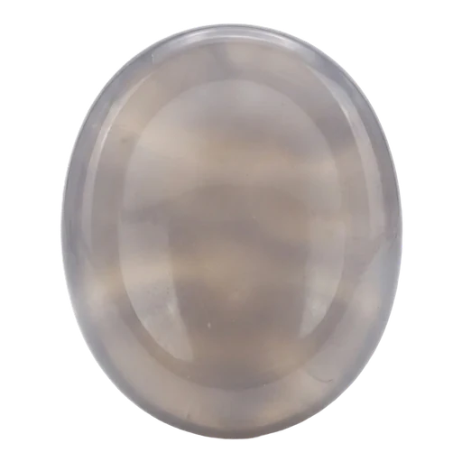
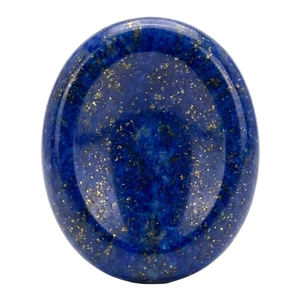
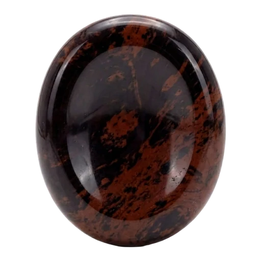
다음 판 후보: 캘린더 · 문자 · 음성 메모 · 장바구니 · 쿠폰 · 읽다 만 책
쥐는 동안
지금 되는 세 가지는 이렇게 읽어요. 어느 것도 자동으로 열어 보지 않아요. 넣어 준 것만 봐요.
채팅 목록을 붙여 넣거나 캡처로 읽어요. 오래 조용한 방과 안 읽은 게 많이 쌓인 방을 골라 줘요. 나가기는 카카오톡에서 직접.
사진에서 고른 캡처 중 묵은 것을 다시 봐요. 장소 · 영수증 · 예약처럼 나눠서, 날이 지난 것부터 치울 후보로 올려요.
맥에서 보고서 파일을 한 번 올려요. 같은 파일이 여러 군데, 묵은 스크린샷을 용량 큰 순으로 보여 줘요. 파일 내용은 안 읽어요.
캡처 · 채팅방 · 데스크톱 목록은 이 기기 브라우저에만 있어요. AI 가 읽게 직접 고른 것만 그때 한 건씩 Claude 로 가요.
치울 후보를 목록으로 드려요. 복사해서 사진첩 · 카카오톡 · 파인더에서 직접 지우세요.
남김 · 치움 표시는 언제든 바꿔요. 돌을 쥐다 멈춰도 결은 그대로 남아요.
커스텀 돌
돌 하나에 기능 하나예요. 바탕 돌을 고르고 이름과 맡을 것을 적으면 그 돌이 홈과 쥐기 화면에 들어가요.
뭘 치우고 싶은지 한 줄로 적어요. 돌 하나가 그 한 가지만 맡아요.
바탕 돌은 워리스톤 사진 그대로예요. 눈 · 입 같은 그림을 덧씌우지 않아요.
지금은 요청을 복사해 보내면 개발사가 만들어 붙여요. AI 모드로 바꾸면 맡을 것을 읽어 치울 후보를 Claude 가 골라요.
앱 속 돌을 손에 쥘 수 있게 팔아요. 지금은 둘러보기만 되고, 값과 입고일은 정해지는 대로 올려요.
플랜
혼자 쥐는 사람부터 내 돌을 만드는 사람까지. 어느 단계든 지우는 건 직접이에요.
요금은 아직 정하지 않았어요. 정해지면 이 자리에 올려요.
미리 알려드려요
쥐기 전에 켜 둔 돌이 맡은 것만요. 시트린이면 조용한 단톡방, 백수정이면 묵은 캡처, 소달라이트면 같은 파일 · 묵은 스크린샷. 끝나면 치울 후보 목록이 나와요.
아니요. 치울 후보를 목록으로 드려요. 복사해서 사진첩 · 카카오톡 · 파인더에서 직접 지우세요. 맥 정리 도구도 휴지통까지만 보내요.
아무 데도 안 가요. 이 기기 브라우저에만 있어요. AI 가 읽게 직접 고른 것만 그때 한 건씩 Claude 로 가고, 분류와 한 줄 요약만 돌아와요.
실물 워리스톤처럼 납작한 타원에 엄지 홈이 있는 모양으로 만든 원석 사진이에요. 그림이나 캐릭터를 덧씌우지 않아요. 실물 돌은 스토어에서 준비 중이에요.
되는 대로 앱에 올려요. 순서는 아직 안 정했어요. 지금 되는 건 단톡방 · 스샷 · 데스크톱 셋이고, 나머지 {prep}은 「준비 중」으로 표시돼 있어요.